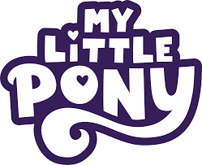

My Little Pony
Inicio
Origen
My Little Pony (literalmente en español: Mi pequeño pony) es una franquicia de entretenimiento desarrollada por Hasbro. Comenzó como una línea de juguetes de plástico desarrollada por Bonnie Zacherle, Charles Muenchinger y Steve D'Aguanno que se han producido desde 1983. Los ponis cuentan con cuerpos de colores, melenas y un símbolo único en uno o ambos lados de sus flancos, al que llaman "Cutie-Mark", con el cual no nacen según la versión animada, sino que les aparece al encontrar su destino y descubren su esencia. My Little Pony ha sido renovada por lo menos cinco veces con nuevas y más modernas versiones para atraer a un nuevo mercado.

Generaciones
My pretty pony es una figura creada por la ilustradora Bonnie Zacherle y el escultor Charles Muenchinger. Se trata de un caballito de plástico duro de unos 25cm. y color marrón, que puede mover las orejas y la cola, y abrir y cerrar los ojos. Una segunda edición menos realista, en colores rosa y blanco, incluía por primera vez las "Cutie Mark": unos dibujos en ambos lomos de los ponis que con el tiempo se convirtieron en uno de los principales distintivos de la marca.
Antes de seguir, entre todas las generaciones vamos a enfocarnos en la GENERACION 4
Pero en fin, este diseño fue lo que sirvió de modelo para la aparición por primera vez en 1982 de My Little Pony y de aqui aparecieron las distintos modelos en juguetes y las futuras series que en conjunto formaria cada una de las siguientes generaciones:
- Generacion 1 (1982-1992):
además de los llamados "ponis de tierra", se empezaron a introducir nuevos modelos como los ponis arcoíris, los unicornios, los pegasos, ponis bebés, ponis aromatizados, ponis macho y hasta hipocampos. Se estrenaron distintos conjuntos anuales, compuestos por de dos a ocho figuras de una misma temática, llegando a lanzarse hasta 14 colecciones diferentes en los años dorados de este juguete. También se comercializaron accesorios que incluían desde vestidos para los muñecos, hasta una cuadra, una guardería o una mansión para los ponis.
- Generacion 2 (1997-1999):
En su mayoría se trató de ponis de tierra, salvo algunos unicornios, y no existían diferencias entre las hembras y los machos, como sí ocurría en la 1ª generación. No llegaron a fabricarse pegasos, aunque algunos ponis incluyeron alas desmontables. También se fabricaron bebés pony.
- Genracion 3 (2003-2009):
En este caso los creadores de Hasbro optaron por dirigirse a un público más infantil, de entre 3 y 10 años. También se abandonaron los diseños más delgados y se volvió a los rasgos físicos de la línea original, sólo que más detallistas, y como ella tuvo su adaptación a la animación, en forma de dos miniseries de capítulos cortos aunque en esta ocasión no pasaron por televisión, y fueron publicadas directamente en VHS, DVD e Internet.
- Generacion 3.5 (2009):
La Generación 3 se empezó a disminuir el número de variantes al mínimo (el llamado Core 7: Pinkie Pie, Rainbow Dash, Cheerilee, Scootaloo, Toola Roola, la unicornio Sweetie Belle y la Pegaso StarSong). Pero luego se cambia el diseño anterior por uno nuevo, más pequeño y con cabezas grandes, y el Pegaso cambia sus alas por las de una mariposa. Estos cambios no gustaron mucho a parte del público.
- Generacion 4 (2010-2019):
Se basa en los personajes Twilight Sparkle, Rainbow Dash, Fluttershy, Pinkie Pie, Applejack y Rarity, que viven en un mundo imaginario llamado Equestria, y se convirtió en un auténtico fenómeno fan a nivel global. Gran parte de la repercusión de esta generación llegó gracias al éxito de su serie de televisión titulada "My Little Pony: la magia de la amistad", que empezó a emitirse en 2010. En 2017 se estrenó: "My Little Pony: La película", y en 2019 se pudo ver un especial de una hora de duración: "My Little Pony: Rainbow Road Trip". Alternativamente se lanzó una línea de juguetes en la que los personajes toman una forma humana. Además de las muñecas y accesorios, se produjeron cuatro películas y otra serie de televisión, llamada "My Little Pony: Equestria Girls". A raíz del éxito de esta 4ª generación surgieron los llamados chicos bronies y las chicas pegasisters.
- Generacion 4.5 (2020):
Los nuevos ponis eran muy diferentes a sus anteriores personajes, My Little Pony: Pony Life pretendía alcanzar el mismo éxito a la Generación 4 pero esto no fue así.
- Generacion 5 (2021-2024):
La Generación 5 está protagonizada por nuevos personajes: Sunny, Izzy, Hitch, Zipp y Pipp, que se dieron a conocer en la película My Little Pony: Nueva Generación, exclusiva de Netflix y estrenada mundialmente en septiembre de 2021. A los “mane 5” en otros países se les conoció como “los 5 amigos”. A los primeros personajes se les unió posteriormente Misty, por lo que el grupo pasó a ser conocido como la “mane 6”. Hasbro produce la nueva línea de juguetes correspondiente entre 2021 y 2024. Su diseño es muy diferente a sus predecesores: Miden unos 7'5cm., son de plástico duro y de cuerpo y patas delgados, el morro corto, algunos tienen patas móviles, el pelo es de plástico rígido en algunas figuras, pudiendo peinarse en otros modelos, “cutie-marks” impresas y pezuñas visibles. El diseño de estos nuevos ponis es fruto de controversia entre los coleccionistas. Mientras los dibujos se ven adorables en pantalla, los juguetes no despiertan tanto interés entre los aficionados de generaciones anteriores, debido a los materiales de fabricación y a la estructura de las figuras, que vagamente se asemejan a un caballito. El diseño de los personajes animados está directamente inspirado en el estilo de Lea Dabssi, fanartista francesa que fue descubierta a través de su portafolio virtual por el jefe del departamento de desarrollo visual y por el modelador de personajes sénior de la primera película, e invitada a trabajar en la producción de dicho film.